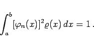
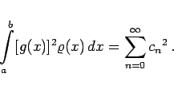
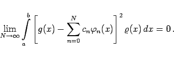

Inhalt Index DeskTop Bronstein

 Differentialgleichungen Gewöhnliche Differentialgleichungen Randwertprobleme Entwicklung nach Eigenfunktionen
Differentialgleichungen Gewöhnliche Differentialgleichungen Randwertprobleme Entwicklung nach Eigenfunktionen


|  | (9.66a) |
Man spricht dann von einer normierten Eigenfunktion.
nach den Eigenfunktionen des zugehörigen Randwertproblems zugeordnet werden, sofern die Integrale in (9.66b) sinnvoll sind.
|  | (9.66c) |
Die FOURIER-Reihe der Funktion g(x) konvergiert in diesem Falle im Mittel gegen , d.h., es gilt
|  | (9.66d) |